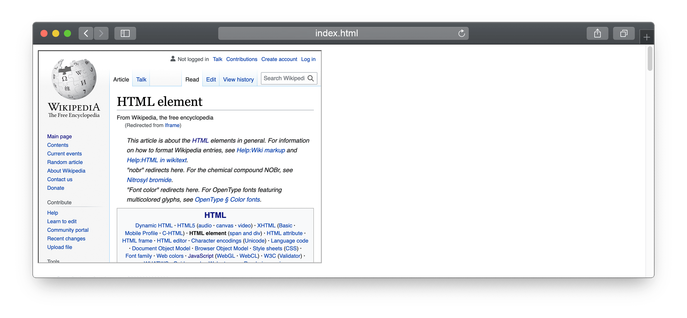
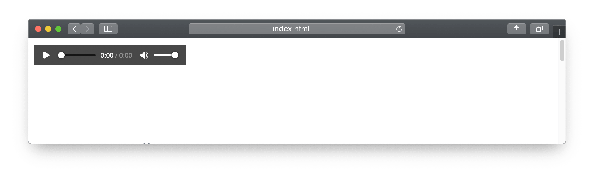
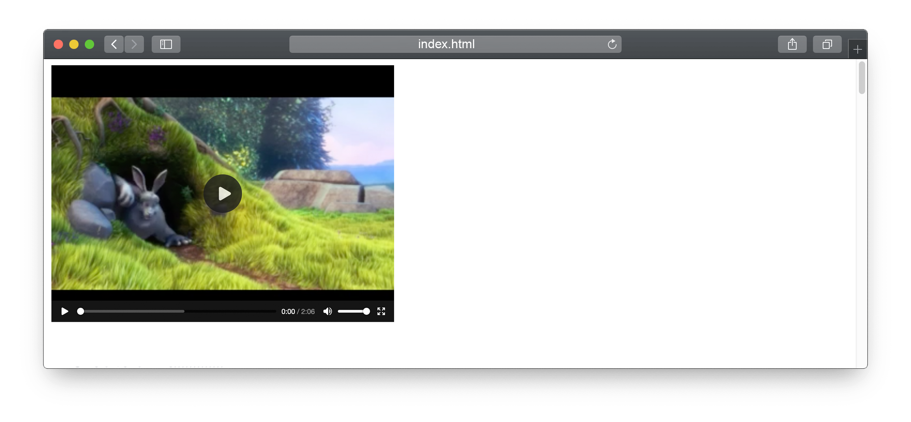

Many types of media and other content can be embedded directly into an HTML page.
Embed an image in a page.
<img src="image.jpg" alt="alt text" width="500px" height="200px" />
The <img> tag has many attribute, but src is the only required attribute. It tells the browser where to look for the image file.
If the width and height attributes are omitted the image will default to the actual image size.
The alt attribute defines alternate text to describe the image. This is very important for lots of users, from people who use screen readers to people with a bad Internet connection who can’t download large image files.
Alt text will also improve your SEO rankings because it is an opportunity to add more keywords to your webpage.
Writing good alt text is a skill! Alt text should give someone reading the text as close to an experience as someone looking at the photo as possible.
For example the alt text for the above image would be Ralph Wiggum from the Simpsons waves in front of school lockers believing he’s a web page.
Another helpful attribute is loading. If you set the loading attribute to lazy loading="lazy" then the image will not be loaded until the users scrolls down to the image. This is helpful for pages with lots of images because the content will load faster and all page functionality will be available sooner because the page doesn’t have to wait to load a large number of images. Images are typically the largest files and take the longest to download.
Iframes allow you to embed content from another website into your own. An iframe is an independent HTML document that is isolated from the page it’s embedded on. You cannot manipulate the contents of an iframe with CSS or Javascript.
Use an iframe when you need to provide a measure of separation between your webpage and the iframe content.
Most websites will not allow you to embed their website for security reasons. Most of the uses for iframes are for third party widgets like ads, youtube videos, tweets, or instargram posts.
<iframe src="https://some-website.com" title="description" width="100%" height="500px" allow="fullscreen" ></iframe>

Include a title attribute for each <iframe>. This tells screen readers what content the iframe contains.
The allow attribute is currently experimental and only supported by Chromium-based browsers. It lets you allowlist specific features like letting the iframe access to the accelerometer, the battery information, the camera, or in this case to go full screen. There are more than 25 available flags.
There’s an audio player right in your browser!
<audio controls>
<source src="audio-sample.ogg" type="audio/ogg">
<source src="audio-sample.mp3" type="audio/mpeg">
Your browser does not support the audio element.
</audio>
The controls attribute adds audio controls, like play, pause, and volume. Without the controls attribute audio will not autoplay - you would need javascript to control the audio. You could add the autoplay attribute to autoplay the audio, but this is not very accessible and most users strongly dislike autoplay audio.
The <source> element allows you to specify alternative audio files which the browser may choose from. The browser will use the first recognized format.
The text between the <audio> and </audio> tags will only be displayed in browsers that do not support the <audio> element.

There’s a video player in your browser as well.
<video width="320" height="240" poster="placeholder.png" controls>
<source src="movie.mp4" type="video/mp4">
<source src="movie.ogg" type="video/ogg">
Your browser does not support the video tag.
</video>
The controls attribute works the same way at audio where the browser will load its own player with controls.
The placeholder attribute loads a custom placeholder image. If there’s not placeholder the player will load the first frame of the video by default.
It is a good idea to always include width and height attributes. If height and width are not set, the page might flicker while the video loads.
The <source> element allows you to specify alternative video files which the browser may choose from. The browser will use the first recognized format.
The text between the <video> and </video> tags will only be displayed in browsers that do not support the <video> element.
